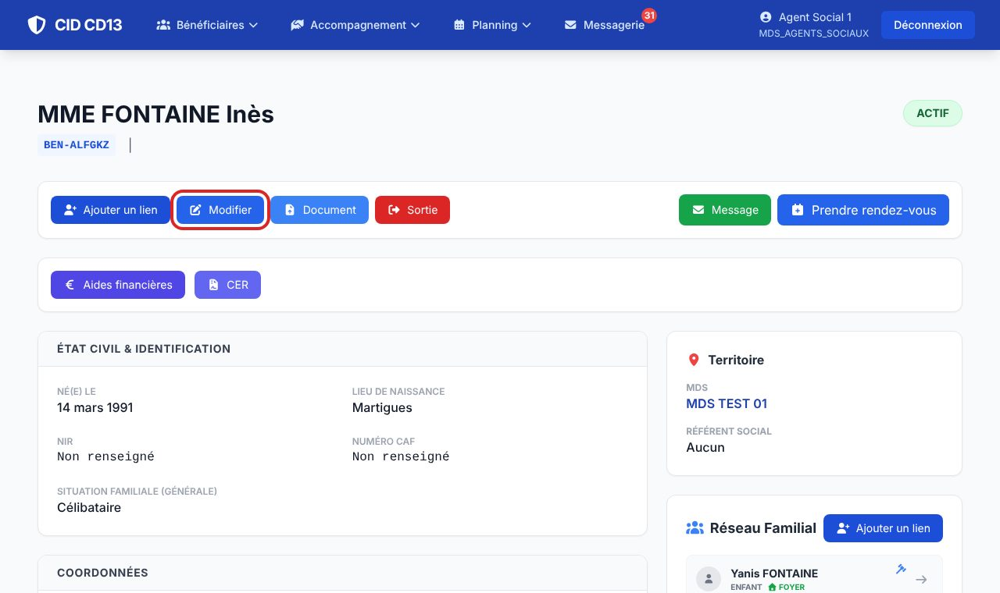
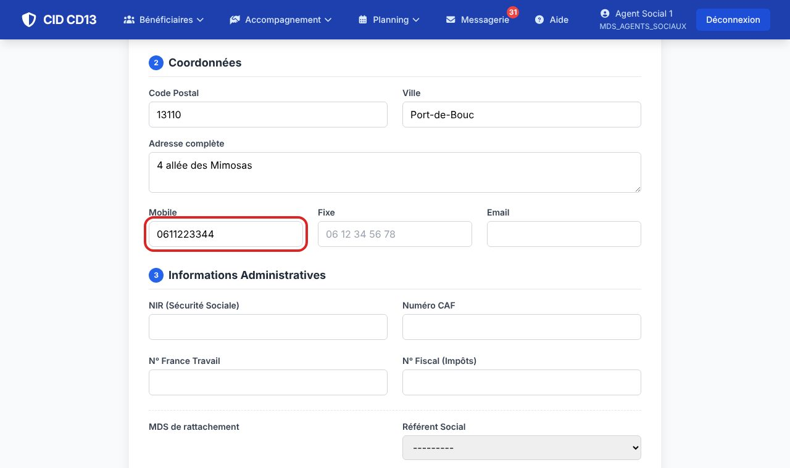
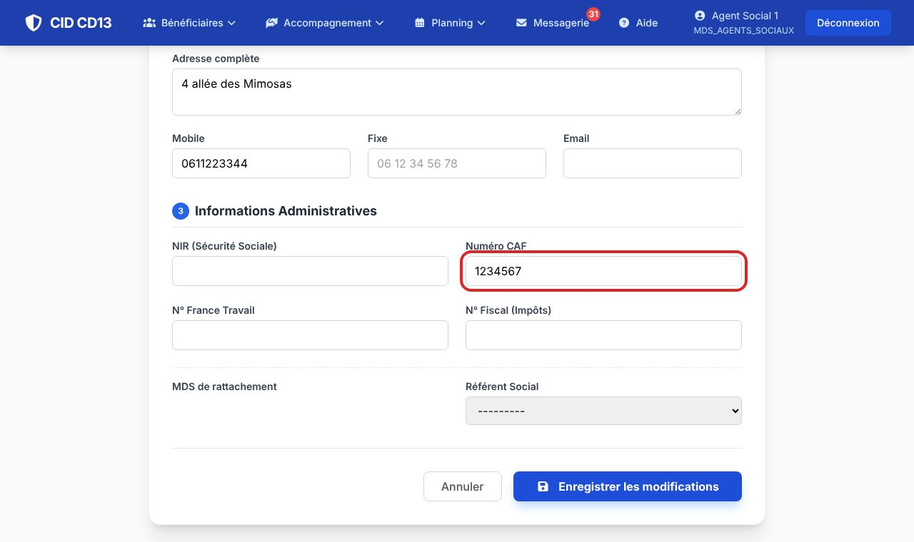
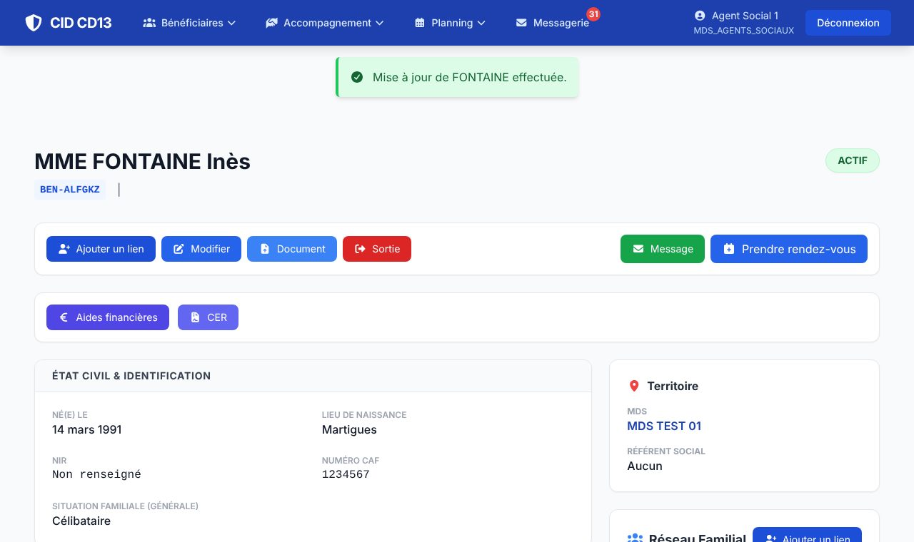

Avant de commencer
- Ouvrez la fiche du bénéficiaire (Chercher un bénéficiaire).
1Ouvrir la modification

- Sur la fiche, cliquez sur Modifier.
2Corriger les informations


- Le formulaire a trois parties : 1. État civil et situation, 2. Coordonnées, 3. Informations administratives.
- Les informations administratives regroupent le NIR, le numéro CAF, le n° France Travail, le numéro fiscal et le référent social.
- Cliquez sur Enregistrer les modifications, en bas du formulaire.
3Vérifier

- Un message vert confirme la mise à jour ; les nouvelles informations s'affichent sur la fiche.
Bon à savoir
- Le nom de naissance (si différent du nom d'usage) se saisit ici : il est repris dans les formulaires officiels.
- La MDS de rattachement ne se change pas ici : voir Transférer un bénéficiaire.
Et ensuite ?
Cliquez sur une image pour l'agrandir. Le cadre rouge montre où cliquer ou quoi remplir. Toutes les données affichées sont fictives.